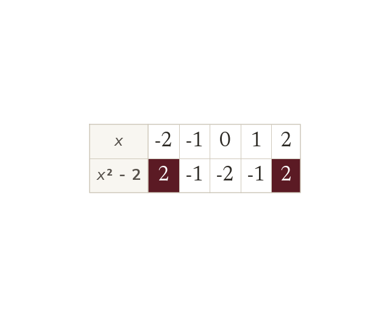
A table of values first
Substitute each to find A negative squares to a positive. So and give the same
A quadratic such as gives one for each found by substituting. Squaring a negative gives a positive, so and give the same
The graph of a quadratic is a curve, the shape of a fountain's jet or a satellite dish. Today we plot one point by point and learn its shape.
Work down the page at your own pace. Write every answer in your book first, then click to check it.
Read each card, then follow the worked examples one step at a time.

Substitute each to find A negative squares to a positive. So and give the same
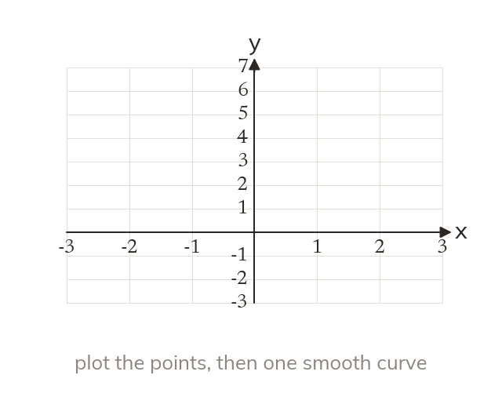
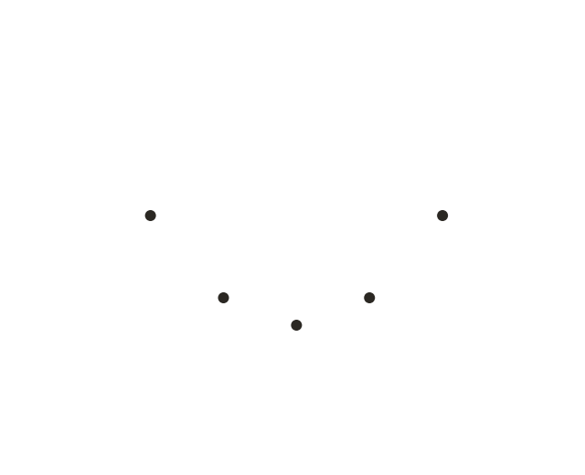

The points of a quadratic lie on a smooth curve called a parabola. They are joined with one curve, never with straight segments.
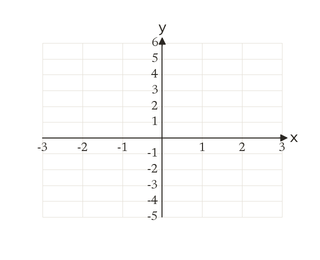
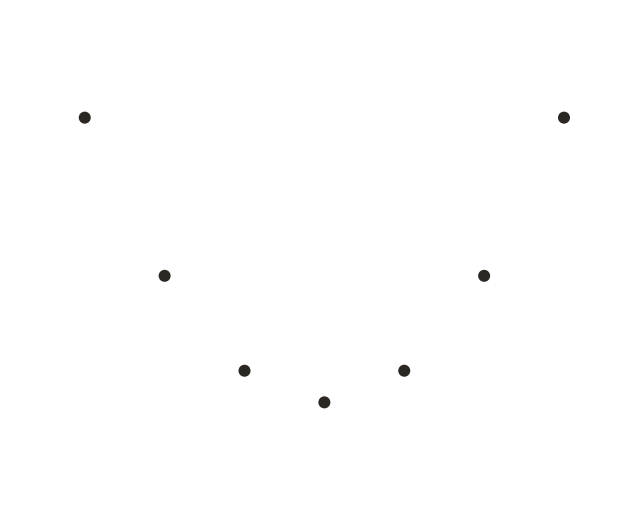
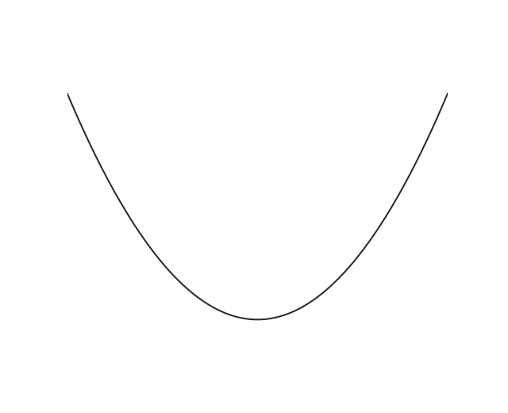
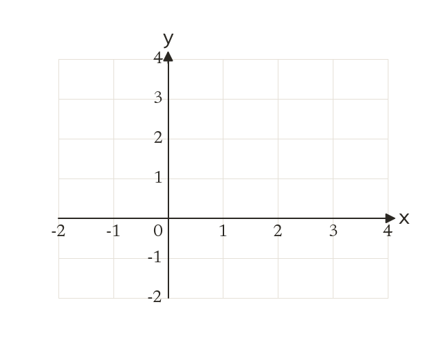
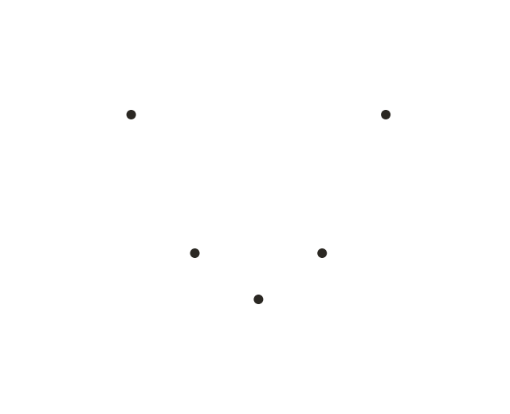
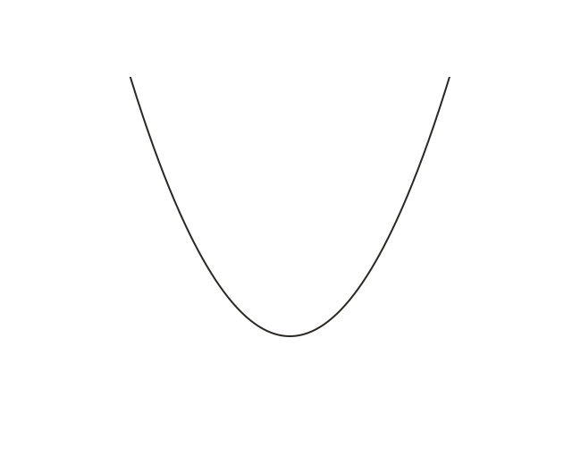
Pick an answer. If it's wrong, the feedback tells you which mistake it was.
Printable worksheet — the questions with room to work.
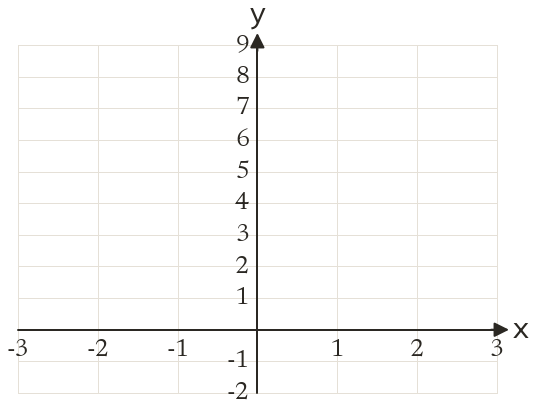
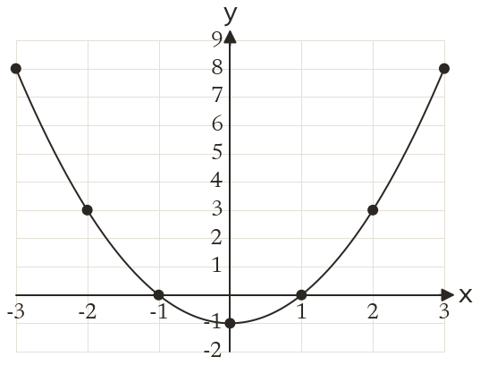
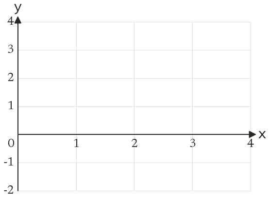
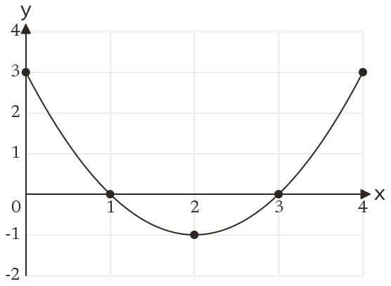
Read each card, then follow the worked examples one step at a time.
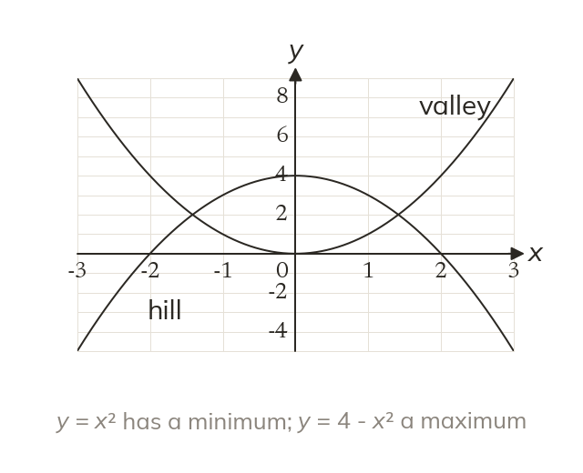
A positive term gives a valley with a minimum. A negative term gives a hill with a maximum.
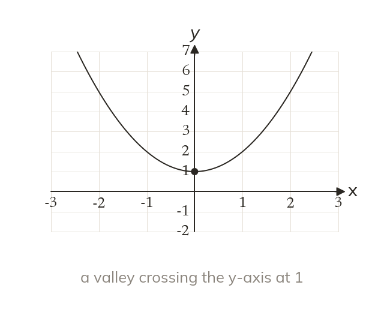
A sketch shows the shape and where the curve crosses the y-axis, not every point. The curve is a valley crossing the y-axis at
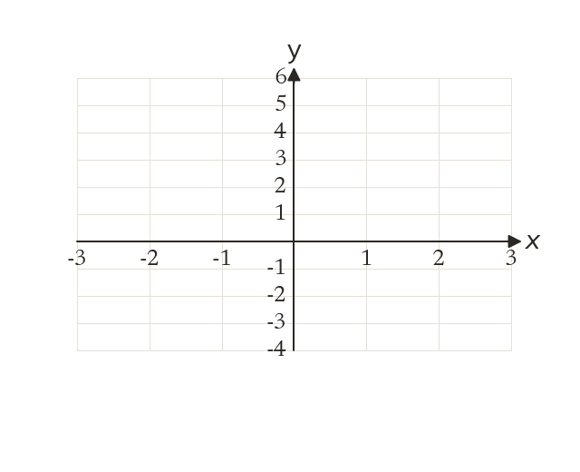

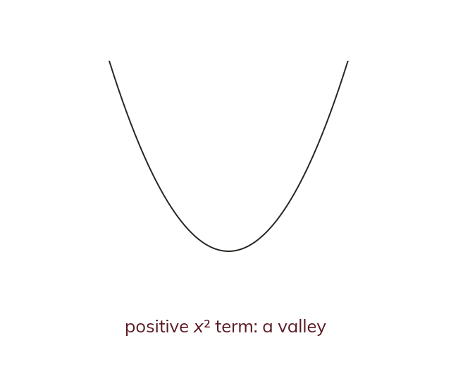
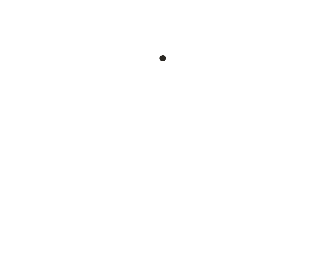
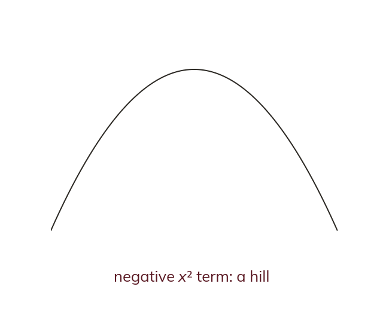
Pick an answer. If it's wrong, the feedback tells you which mistake it was.
Finished? Next lesson: 10.17.6 Roots from a Quadratic Graph.
Log in, then search for a code to practise that skill.